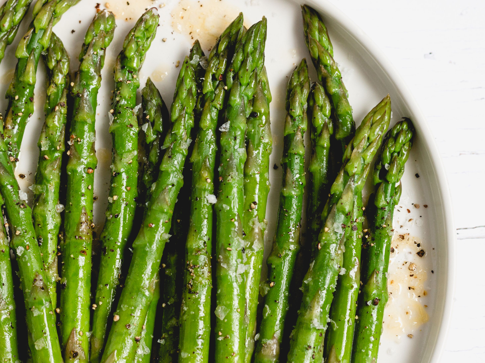

Oven Roasted Asparagus

This recipe is great for busy week nights and family dinners.
With this recipe, you'll be in and out of the kitchen in no time.
Ingredients
- 1 bunch thin asparagus spears, trimmed
- 3 tablespoons olive oil
- 1.5 tablespoons grated Parmesan cheese (Optional)
- 1 clove garlic, minced (Optional)
- 1 teaspoon sea salt
- 1.5 teaspoon ground black pepper
- 1 tablespoon lemon juice (Optional)
Steps
- Preheat an oven to 425 degrees F (220 degrees C).
- Place the asparagus into a mixing bowl, and drizzle with the olive oil.
Toss to coat the spears, then sprinkle with Parmesan cheese, garlic, salt, and pepper.
Arrange the asparagus onto a baking sheet in a single layer.
- Bake in the preheated oven until just tender, 12 to 15 minutes depending on thickness. Sprinkle with lemon juice just before serving.